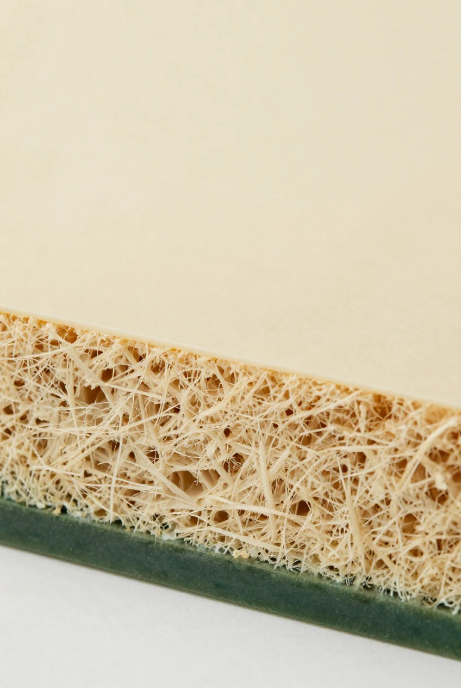
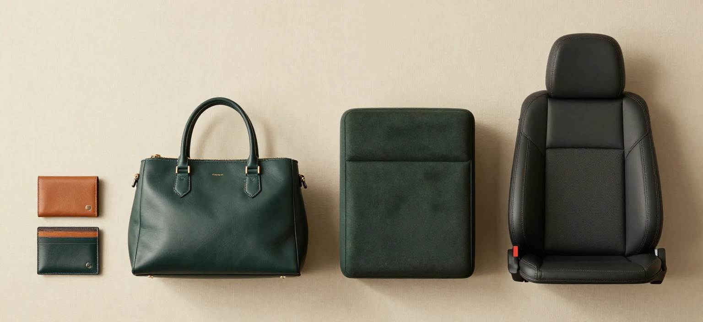
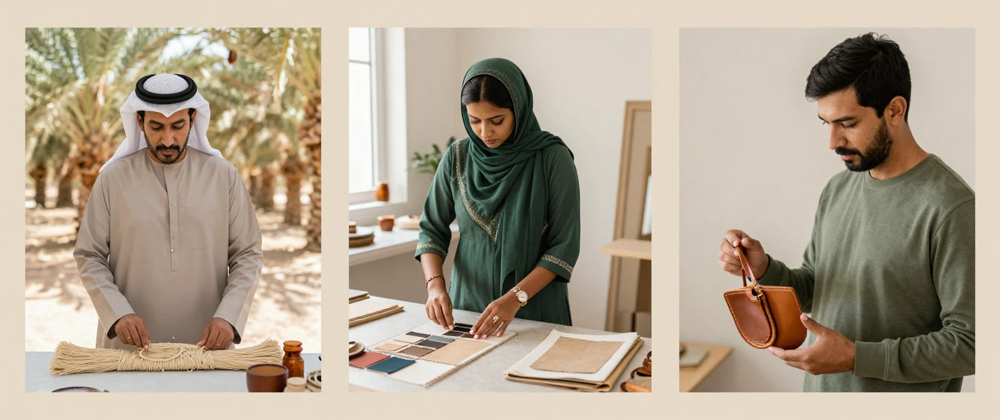
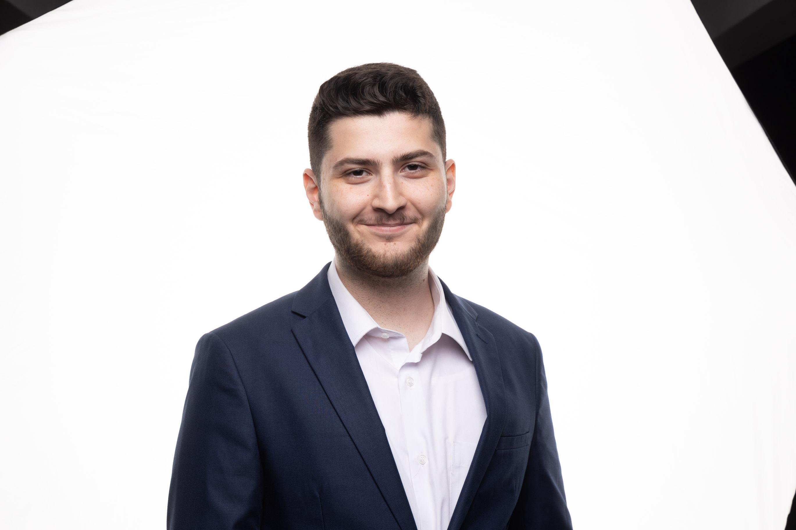

Explore & formulate
Investigate palm-fibre structures, binder composition, and material samples.
From overlooked agricultural waste to a new material possibility. We’re exploring a premium leather alternative made with date-palm fibres.
Discover the material ↗What if the next chapter
was already growing here?
We believe it can be the beginning of something beautiful.
Every season, date-palm farming leaves behind fronds and fibres. Palmous is a material venture exploring how this local resource can find a second life as a leather-like composite.
Our vision connects Qatar’s agricultural heritage with material research and contemporary design — creating value for the people who grow, make, and imagine.
Follow our development journey ↗A starting point in Qatar, with a future ambition across the GCC.
Exploring palm fibres and a natural resin matrix through material trials.
A vision for value that reaches farmers, artisans, designers, and brands.

A proposed layered structure. Explore what each part is intended to do.
A fine date-palm fibre mat, compressed and smoothed to explore a leather-like surface finish.
Designed with intention. Validated through research.
Composition and performance remain subject to trials. Strength, abrasion, moisture resistance, and environmental impact still need independent validation.
From objects you carry to spaces you inhabit. A roadmap of potential uses, beginning with small goods.

APPLICATION CONCEPTS — NOT PRODUCTS AVAILABLE FOR SALEWallets, cardholders, and key fobs are the first proof-of-concept targets: a focused way to explore how the material feels, forms, and performs.
Our ambition goes beyond a sheet of material. We want to build a chain of opportunity — from farmers finding new value in agricultural by-products to artisans and independent designers working with a locally rooted alternative.
Find your place in the story ↗
Palmous is at the R&D stage. Here’s how we envision moving from a promising idea to a material people can trust.
Investigate palm-fibre structures, binder composition, and material samples.
Seek independent performance testing, environmental assessment, and buyer durability trials.
Develop B2B sheets and panels. Explore regional licensing after the production process is validated.

Founder, Palmous
Building a new material story, starting with the resources around us.
Palmous brings together Othman’s project vision: give date-palm agricultural waste a new purpose and explore a premium alternative for designers and makers in Qatar and the wider GCC.
Meet Othman on GitHub ↗Researchers. Farmers. Designers. Material explorers.
If this vision speaks to you, discover the project and join the conversation.
Connect with Othman through his GitHub profile and project.